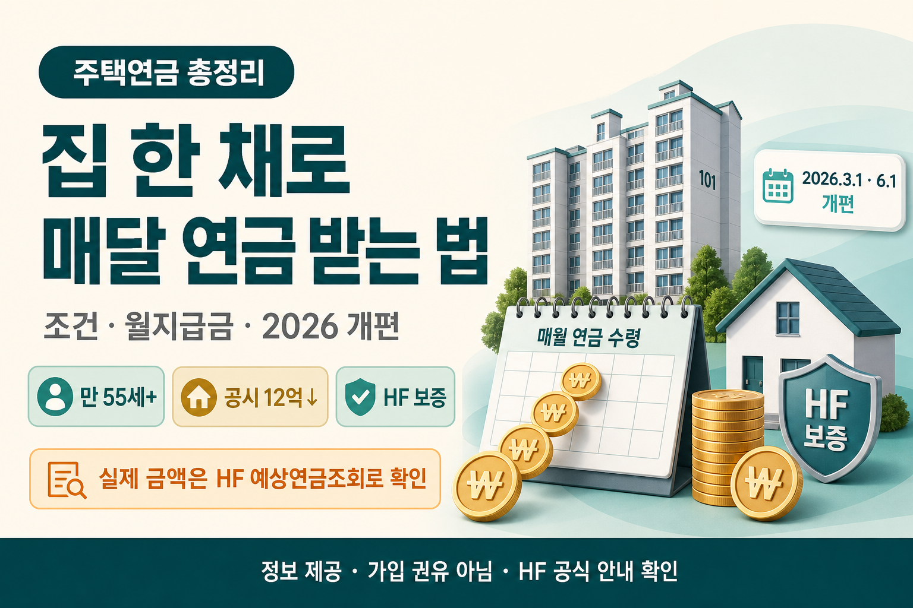

집 한 채로 매달 연금 받는 법 — 주택연금 조건·수령액 총정리 (2026 개편 반영)
집은 있는데 현금이 부족할 때, 초보 눈높이로 조건·예시 수령액·2026 개편만 정리합니다

은퇴를 앞두거나 이미 은퇴하신 분들 중에, 이런 말씀을 자주 듣습니다. “집은 있는데, 매달 쓸 현금이 없다.” 월급이 끊기면 생활비·병원비·손주 용돈까지 한꺼번에 현금으로 나가야 하는데, 집이라는 자산은 당장 쪼개 쓰기 어렵습니다. 오늘은 그 고민의 한 갈래인 주택연금을, 50·60대 눈높이로 조건·예시 수령액·2026년 개편만 차분히 정리해 보겠습니다.
먼저 읽어주세요
본 글은 정보 제공이며 가입·투자 권유가 아닙니다. 결정은 본인과 가족이 상의하시고, 최신 기준·본인 예상 수령액은 한국주택금융공사(HF) 공식 안내와 예상연금조회로 반드시 확인하세요. 아래에 적힌 월지급금 수치는 2026.3.1 기준 종신지급 정액형 예시입니다.
- 가입 나이·주택가격·거주·대상주택 조건을 한곳에 모았습니다.
- 나이·집값별 월지급금 예시 표(2026.3.1, 종신지급 정액형)를 넣었습니다.
- 2026년 개편은 3.1 시행과 6.1 시행을 구분해 정리했습니다.
1. 은퇴 후, 집은 있는데 현금이 없다
생산관리 현장에서 잔뼈가 굵은 저도, 부모님 세대와 주변 선배들의 이야기를 들으면 “집값”과 “생활비”가 따로 노는 현실이 자꾸 보입니다. 아파트 한 채는 수억짜리 자산인데, 장보러 갈 현금흐름은 얇아지는 거죠. 집을 팔면 목돈은 생기지만, 살던 동네·추억·배우자와의 생활 터전이 한꺼번에 흔들립니다. 전세를 주고 작은 집으로 옮기는 방법도 있지만, 이사·보증금·관리비 부담이 또 따라옵니다.
그래서 많은 분들이 “집은 그대로 두고, 매달 생활비를 만들 수 없을까?”를 찾습니다. 그 질문에 대한 공공 제도 중 하나가 주택연금입니다. 다만 이름만 들으면 어렵게 느껴지고, 숫자 표는 더 어렵습니다. 이 글은 어려운 말을 줄이고, 확정된 조건·예시 숫자·개편 시점만 짚겠습니다. “무조건 가입하라”가 아니라, “이런 구조인데 우리 집에도 맞는지 점검해 보자”는 톤입니다.
집값 감을 잡을 때는 호가만 보지 말고, 실거래가 지도로 최근 거래 흐름을 같이 보시면 도움이 됩니다. 주택연금은 공시가격·감정평가 등 제도 쪽 기준이 따로 있으니, 지도의 시세는 “대략적 감”으로만 쓰시고, 가입 상담에서는 HF·취급 금융기관 안내를 따르세요.
2. 주택연금이 뭔가 — 쉬운 비유로
주택연금을 한 줄로 말하면 이렇습니다. 내가 살고 있는 집을 담보로 맡기고, 국가(한국주택금융공사)가 보증하는 방식으로 평생(또는 선택한 기간) 매달 연금을 받는 제도입니다. 쉽게 비유하면, “집이라는 저금통을 깨지 않고, 뚜껑만 살짝 열어 매달 생활비를 꺼내는 느낌”에 가깝습니다. 집을 팔아서 현금화하는 것과 달리, 실거주하면서 연금을 받는 구조라는 점이 핵심입니다.
가입 방식은 크게 두 가지가 있습니다. 근저당권 방식(기본)과 신탁방식입니다. 신탁방식은 사망 시 배우자에게 수급권이 자동으로 승계되는 점이 안내됩니다. 부부라면 “내가 먼저 세상을 떠나도 배우자가 연금을 이어받을 수 있는지”를 가입 전에 꼭 물어보시는 편이 좋습니다.
또 하나 자주 나오는 오해가 있습니다. “연금을 많이 받으면 나중에 집이 통째로 날아간다”는 공포입니다. 제도 안내상, 나중에 집값보다 연금을 더 받아도 상속인에게 부족분을 청구하지 않고, 집을 처분해 정산하며 부족분 청구가 없다고 합니다. 반대로 집 처분 후 남는 금액이 있으면 상속인에게 귀속됩니다. 즉 “국가가 평생 지급을 보증하되, 최종 정산은 집을 기준으로 한다”는 큰 그림으로 이해하시면 됩니다. 세부 정산·세금·상속 이슈는 가정마다 다르니, 가입 전 가족·전문가와 상의하세요.
3. 가입 조건 총정리 (나이·집값·거주·대상주택)
“우리 집도 되나?”를 먼저 가르는 네 가지입니다. 나이, 주택가격, 거주요건, 대상주택입니다. 아래에 적힌 내용은 안내용이며, 본인 해당 여부는 HF 상담으로 확정하세요.
가입연령
부부 중 1인이 만 55세 이상이면 가입 연령 조건을 충족하는 쪽으로 안내됩니다. “둘 다 55세”가 아니라 “한 분만 55세 이상”이어도 된다는 점이 중요합니다. 다만 월지급금 산정에서는 부부의 나이 적은 사람을 기준으로 잡는 구조이므로, 가입은 가능해도 월 수령액은 연소자 나이의 영향을 받습니다.
주택가격
부부 기준 보유주택 공시가격 합산 12억 원 이하입니다. 다주택자도 합산 공시가격이 12억 이하면 가능한 쪽으로 안내됩니다. 12억을 넘는 2주택자의 경우, 3년 이내 1주택 처분 조건부로 가입이 가능하다는 안내가 있습니다. “시세 12억”이 아니라 “공시가격 합산” 기준이라는 점을 꼭 구분하세요. 시세와 공시가격은 차이가 날 수 있습니다.
거주요건·대상주택
실거주(주민등록 전입)가 필요합니다. 대상주택에는 일반주택, 노인복지주택, 주거목적 오피스텔, 주택면적 1/2 이상인 복합용도주택이 포함되는 쪽으로 안내됩니다. “오피스텔은 무조건 안 된다”가 아니라, 주거목적 요건을 갖춘 경우를 말합니다. 복합용도주택도 면적 비율 조건을 충족하는지 서류를 미리 챙기세요.
가입 전 체크 메모
- 부부 중 연소자 나이(월지급금 기준)와 가입 가능 여부(만 55세)를 따로 적어 두세요.
- 공시가격 합산이 12억 근처라면, 다주택·처분 조건부 조항을 HF에 확인하세요.
- 실거주·전입 상태가 서류와 일치하는지 미리 점검하세요.
4. “나는 얼마 받을까” — 나이·집값별 월지급금 예시
가장 궁금한 질문이죠. 아래 표는 2026.3.1 기준, 종신지급 정액형, 일반주택, 부부 중 연소자 나이 기준의 월지급금 예시입니다. 단위는 만 원입니다. 실제 금액은 시세·감정평가액·가입시점 금리에 따라 달라지므로 한국주택금융공사(HF) 예상연금조회로 반드시 확인하세요.
| 연소자 나이 | 주택가격 1억 | 3억 | 5억 | 7억 |
|---|---|---|---|---|
| 60세 | 21 | 63.2 | 105.3 | 147.5 |
| 65세 | 25.2 | 75.8 | 126.4 | 177 |
| 70세 | 30.7 | 92.3 | 153.9 | 215.5 |
| 75세 | 38.1 | 114.3 | 190.6 | 266.9 |
| 80세 | 48.3 | 144.9 | 241.6 | 338.2 |
※ 2026.3.1 기준 종신지급 정액형 예시(단위: 만원). 실제 금액은 시세·감정평가액·가입시점 금리에 따라 달라지므로 HF 예상연금조회로 반드시 확인하세요.
표를 읽는 감을 잡아 볼까요. 예를 들어 70세·주택가격 3억이면 월 약 92.3만 원 수준입니다. 같은 3억이라도 60세면 63.2만 원, 80세면 144.9만 원으로 차이가 납니다. 같은 70세라도 1억이면 30.7만 원, 5억이면 153.9만 원으로 집값에 따라 크게 달라집니다. “우리 집 시세가 대충 얼마인지”만 알아도, 표에서 대략적인 위치를 가늠할 수 있습니다.
65세·5억이면 126.4만 원, 75세·5억이면 190.6만 원입니다. 80세·7억 예시처럼 나이가 많고 집값이 높으면 월 338.2만 원까지도 표에 나옵니다. 반대로 60세·1억이면 21만 원이라, “집만 있으면 충분하다”고 단정하기 어렵습니다. 국민연금·퇴직연금과 합치면 생활비 그림이 달라질 수 있지만, 주택연금만으로 모든 노후를 해결한다고 말할 수는 없습니다. 표는 “감”을 잡는 도구이고, 최종 숫자는 HF 조회가 정답입니다.
한 가지 더, 표의 주택가격 칸(1억·3억·5억·7억)은 이해를 돕는 구간 예시입니다. 실제 담보 인정 금액은 시세·감정평가·가입 시점 조건에 따라 달라집니다. 그래서 “우리 집이 시세 4억인데 표에 4억이 없다”고 멈추지 마시고, 가까운 칸으로 감을 잡은 뒤 HF 예상연금조회에서 본인 숫자를 뽑는 순서가 안전합니다. 다시 한 번 강조합니다. 위 수치는 2026.3.1 기준 종신지급 정액형 예시이며, 실제 금액은 시세·감정평가액·가입시점 금리에 따라 달라지므로 한국주택금융공사(HF) 예상연금조회로 반드시 확인하세요.
5. 월지급금이 정해지는 3요소
표에서 이미 보이듯, 핵심 원리는 단순합니다. 나이가 많을수록, 집값이 높을수록 월지급금이 커집니다. 부부는 나이 적은 사람을 기준으로 잡습니다. 여기에 지급방식(종신지급 정액형 등)이 더해져 최종 월액이 나옵니다.
1. 나이(연소자)
같은 집값이라도 나이가 많을수록 월지급금 예시가 커집니다. 부부는 연소자 기준입니다.
2. 주택가격
담보가 되는 집값(제도상 평가·공시 등 기준)이 높을수록 월지급금 예시가 커집니다.
3. 지급방식
이 글의 표는 종신지급 정액형 예시입니다. 방식에 따라 월액·기간 구조가 달라질 수 있습니다.
반드시 조회
예시표 ≠ 내 확정액. 시세·감정평가·가입시점 금리에 따라 달라지므로 HF 예상연금조회를 하세요.
정액형은 매달 같은 금액을 받는 구조라, 물가가 크게 오르면 체감 구매력이 줄어들 수 있습니다. 반대로 “금액이 들쭉날쭉하지 않아 가계부를 짜기 쉽다”는 장점도 있습니다. 어떤 방식이 맞는지는 건강·기대수명·다른 연금 소득·배우자 상황을 함께 보고 고르셔야 합니다. 이 글에서는 표에 제시된 종신지급 정액형 예시만 기준으로 설명합니다.
부부라면 “누가 연소자인가”를 먼저 확인하세요. 남편이 70세, 부인이 65세라면 월지급금 산정은 65세 기준에 가깝게 움직입니다. 가입 가능 여부(만 55세 이상 1인)와 월액 산정 기준(연소자)이 다르다는 점만 기억해도, 상담실에서 헷갈릴 일이 훨씬 줄어듭니다. 신탁방식으로 배우자 수급권 자동 승계를 검토할지도, 이 단계에서 함께 메모해 두세요.
6. 2026년 뭐가 좋아졌나 — 개편 정리 (시점 구분)
2026년에는 주택연금 관련 개편이 있었습니다. 여기서 중요한 건 언제부터 적용되는지입니다. 아래는 확정 팩트만, 시행 시점을 나눠 적습니다.
2026.3.1 시행
- 월지급금 인상: 계리모형 재설계로 월지급금이 평균 약 3.13% 인상되었습니다. 예) 72세·4억 기준 월 129.7만 원 → 133.8만 원.
- 초기보증료 인하: 주택가격의 1.5% → 1.0%로 인하. 예) 4억이면 600만 원 → 400만 원. 다만 연보증료는 대출잔액의 0.75% → 0.95%로 소폭 인상되었습니다.
- 초기보증료 환급 가능 기간 확대: 3년 → 5년.
3.1 개편을 한 줄로 요약하면, “매달 받는 돈은 조금 늘고, 가입 때 내는 초기보증료 부담은 줄었지만, 연보증료는 소폭 올랐다”입니다. 초기 목돈 부담이 줄었다는 점과, 장기적으로 연보증료 구조가 바뀌었다는 점을 같이 보셔야 합니다.
2026.6.1 시행
- 저가주택 우대 확대: 시가 1.8억 미만 저가주택 우대형의 월 우대액이 확대되었습니다. 예) 평균 12.4만 원.
- 실거주 예외: 질병치료 등 불가피한 사유가 있으면 실거주하지 않아도 가입이 허용됩니다.
- 세대이음 주택연금: 만 55세 이상 고령 자녀가 부모 주택연금 채무를 이어받아 상환할 수 있습니다.
6.1 개편은 “저가주택·건강·세대 간 이어받기”처럼 현장 사정에 맞춘 문턱을 낮추는 성격이 큽니다. 특히 병원·요양 등으로 집을 비워야 하는 경우, 예전에는 실거주 요건 때문에 막혔을 수 있는 지점이 완화되었다는 안내입니다. 세대이음은 “자녀가 부모 채무를 이어받는” 구조이므로, 가족 간 합의·상환 능력이 핵심입니다. 가볍게 결정할 항목이 아닙니다.
시점만 기억하세요
- 3.1: 월지급금·초기보증료·환급기간·연보증료 조정
- 6.1: 저가주택 우대·실거주 예외·세대이음
- 본인 적용 여부는 가입 시점·주택 유형에 따라 다를 수 있으니 HF 확인
7. 장점 정리
주택연금이 관심을 받는 이유는, “집을 팔지 않고도 현금흐름을 만든다”는 점 때문입니다. 확정 팩트 기준으로 장점을 정리하면 다음과 같습니다.
- 국가(HF) 지급 보증: 연금 중단 위험이 없도록 설계된 공공 보증 구조입니다. 민간 상품의 “회사가 망하면?” 불안과는 결이 다릅니다.
- 평생 거주 + 매달 수령: 살던 집에서 계속 살면서 연금을 받을 수 있습니다. 이사 스트레스·동네 단절을 줄이고 싶은 분들에게 특히 와닿는 부분입니다.
- 집값보다 많이 받아도 상속인 추가 청구 없음: 집을 처분해 정산하고, 부족분은 청구하지 않는다고 안내됩니다. 반대로 남으면 상속인에게 귀속됩니다.
여기에 2026년 개편으로 초기보증료 부담이 줄고(3.1), 저가주택 우대·실거주 예외·세대이음(6.1)이 더해지면서 “예전보다 문턱이 조금 낮아졌다”는 체감이 생길 수 있습니다. 다만 장점만 보고 결정하면 후회할 수 있으니, 다음 단점도 같이 보셔야 합니다.
8. 단점·주의할 점 — 솔직하게
좋은 제도라도 “모든 집·모든 가족”에 맞는 건 아닙니다. 균형 있게 보면 이런 부담이 있습니다.
- 초기보증료 목돈: 2026.3.1부터 비율은 1.0%로 낮아졌지만, 가입 시점에 목돈이 드는 구조는 여전합니다. 4억이면 400만 원 수준(예시)입니다.
- 연보증료 소폭 인상: 초기보증료는 줄었지만 연보증료는 0.75%→0.95%로 올랐습니다. 단기·장기 비용을 함께 따져야 합니다.
- 정액형의 물가 한계: 매달 같은 금액이라 가계부는 편하지만, 물가가 오르면 체감 생활비 커버력이 약해질 수 있습니다.
- 집값 상승분 온전히 못 누림: 집이 크게 오를 때, 그 상승분을 매도 차익처럼 온전히 가져가기 어렵습니다. “집값 대박”을 기대하는 전략과는 결이 다릅니다.
- 중도 해지 정산: 중간에 해지하면 그동안 받은 연금+이자+보증료를 정산해야 합니다. “잠깐 써보고 그만두기”가 가벼운 선택이 아닙니다.
- 상속 우선이면 신중: 자녀에게 집을 온전히 물려주고 싶다면, 가족 대화 없이 가입하기 어렵습니다. 세대이음(6.1)도 채무 승계 이슈가 있습니다.
세금·보유세·양도 이슈까지 겹치면 이야기가 더 길어집니다. 부동산 세제 방향이 궁금하시면 7월 부동산 세제개편 방향 총정리를, 노후 현금흐름을 금융 쪽에서도 보고 싶으시면 ISA 세제개편 정리를 함께 참고해 보세요. 어느 쪽이든 “한 방에 해결”이 아니라 “조합을 짜는” 문제에 가깝습니다.
9. “나에게 맞을까” — 상황별 체크
-
현금이 부족한 1주택 은퇴자
살던 집을 유지하면서 매달 생활비를 보태고 싶다면 주택연금이 후보가 될 수 있습니다. 표에서 나이·집값 위치를 가늠한 뒤, HF 예상연금조회로 “우리 집 숫자”를 확인하세요. 국민연금·배우자 소득과 합쳐 가계부를 시뮬레이션해 보는 편이 안전합니다. -
상속을 최우선으로 생각하는 가족
집을 온전히 물려주고 싶다면 가입 전 가족 회의가 필수입니다. 남는 금액은 상속인에게 돌아가지만, “온전한 집 자체”를 원하는 기대와는 다를 수 있습니다. 세대이음도 채무를 이어받는 구조이므로, 자녀의 상환 능력·의사를 솔직히 나눠야 합니다. -
저가주택 보유자
시가 1.8억 미만이라면 2026.6.1부터 우대형 월 우대액이 확대(예: 평균 12.4만 원)되었습니다. “집값이 작아서 월액이 너무 적다”고 느꼈던 분들께는 점검할 가치가 있습니다. 정확한 우대 적용 여부는 HF에서 확인하세요.
질병치료 등으로 실거주가 어려운 경우에는 6.1 예외 조항을 상담해 보세요. “집이 비어 있으면 무조건 안 된다”고 단정하지 마시고, 불가피 사유 인정 범위를 서류와 함께 문의하는 편이 좋습니다. 병원·요양 일정, 주민등록 상태, 배우자 거주 여부를 미리 정리해 가면 상담이 빨라집니다.
상황별 체크의 공통점은 하나입니다. “표의 예시 숫자”로 희망을 키운 뒤, “HF 조회 숫자”와 “가족 합의”로 현실을 맞추는 것입니다. 현금이 급해도 중도해지 정산·초기보증료·상속 기대를 건너뛰면 나중에 갈등이 커질 수 있습니다. 반대로 상속만 고집하다가 생활비가 마르면, 집을 급매로 처분해야 하는 더 아픈 선택이 올 수도 있습니다. 어느 쪽이든 정답은 가정마다 다르니, 이 글은 결정을 대신하지 않습니다.
10. 신청 방법 + HF 예상연금조회 + 마무리
실무적으로는 한국주택금융공사(HF)와 취급 금융기관을 통해 상담·신청이 이뤄집니다. 집에서 할 수 있는 첫걸음은 예상연금조회입니다. 나이·주택가격을 넣어 보면, 이 글의 예시표보다 훨씬 본인에 가까운 숫자가 나옵니다. 조회 결과가 마음에 들어도 바로 가입하지 마시고, 배우자·자녀와 한 번 더 이야기한 뒤, 초기보증료·연보증료·중도해지·상속 시나리오를 체크리스트로 적어두세요.
집값 감을 잡을 때는 실거래가 지도로 최근 거래를 보고, 공시가격·감정평가 등 제도 기준은 HF 안내를 따르세요. 세금·금융 쪽 노후 준비는 세제개편 방향· ISA 변화도 곁들여 보시면 “집만 볼지, 현금흐름을 나란히 볼지” 시야가 넓어집니다.
마지막으로 한 말씀만 더 드리겠습니다. 주택연금은 “집을 포기하는 제도”가 아니라, “집을 담보로 현금흐름을 만드는 선택지”입니다. 맞으면 든든하고, 안 맞으면 다른 길이 더 나을 수 있습니다. 숫자는 HF에서 확인하고, 마음은 가족과 나누세요. 오늘 정리한 조건·예시표·2026 개편(3.1 / 6.1)이 그 대화의 출발점이 되길 바랍니다.
📎 출처·참고

본 글은 정보 제공 목적이며 투자·법률·세무·가입 자문이 아닙니다. 주택연금 조건·월지급금·보증료는 시세·감정평가액·가입시점 금리·주택 유형에 따라 달라지므로, 최신 기준은 한국주택금융공사(HF) 공식 안내와 예상연금조회로 확인하시기 바랍니다. 가입 결정은 본인·가족과 상의하시기 바랍니다.